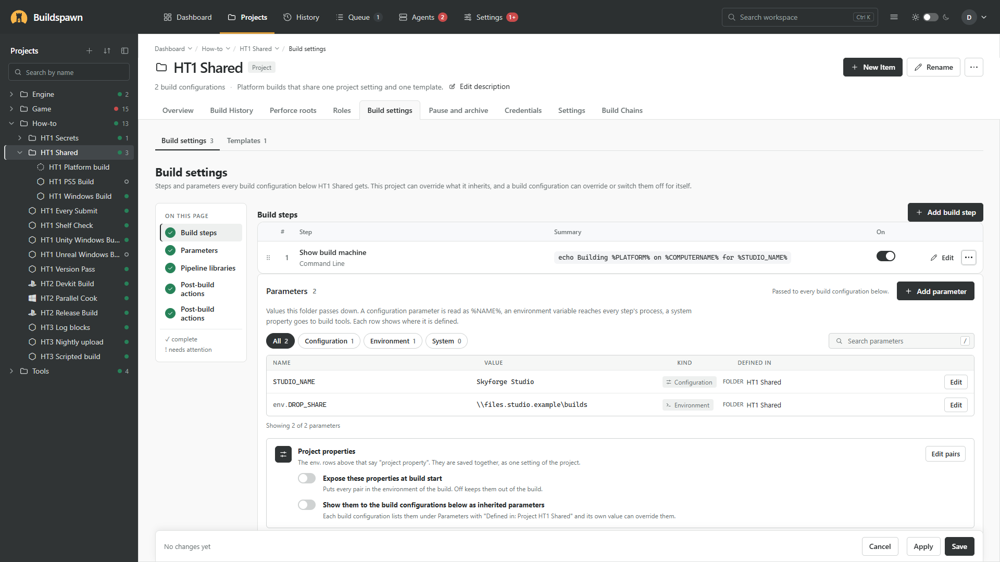
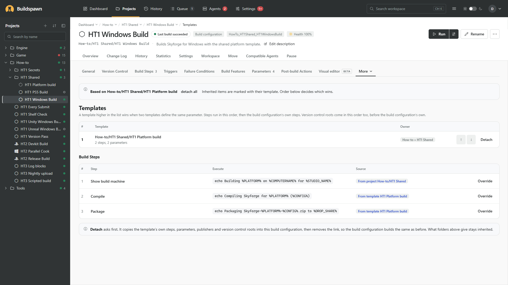
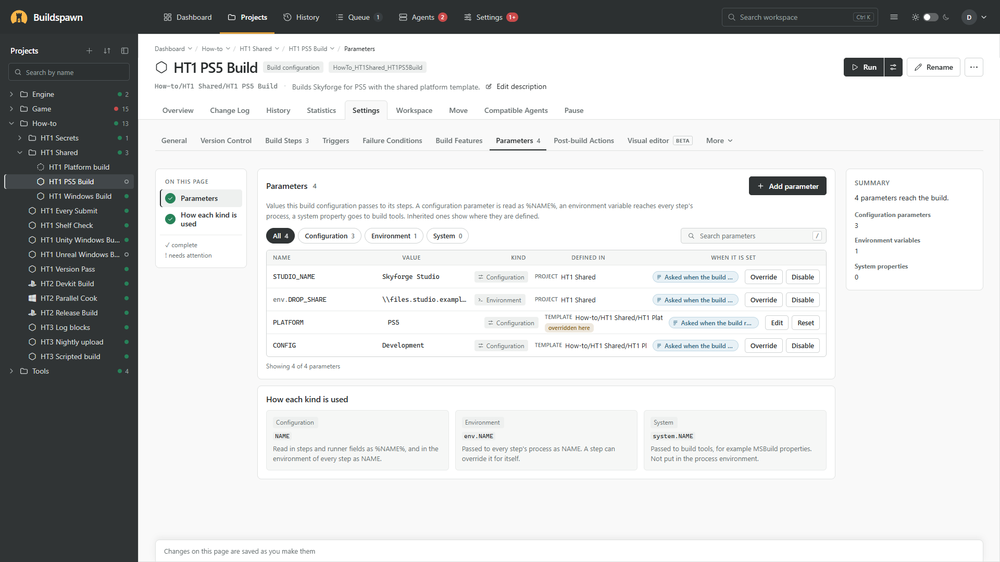
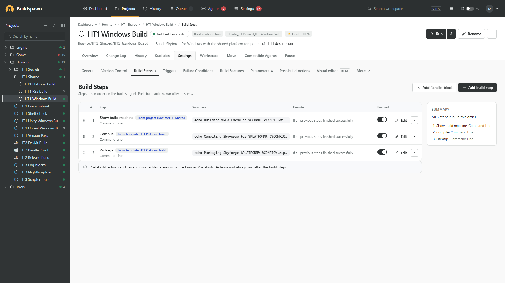
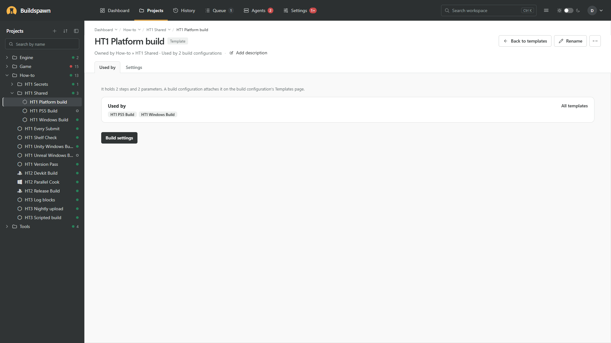

Share settings between build configurations
Set a step or a parameter once and let many build configurations use it: through their project, or through a template.
In this example, a Windows build and a PS5 build both print the build machine, compile and package. The project HT1 Shared gives every build configuration inside it a studio name, a drop folder and one step. The template HT1 Platform build holds the compile and package steps. The PS5 build changes one value: the platform.
Before you start
- A project to hold the build configurations. See Create a project.
- The build settings permission on that project, so you can change what it passes down. Without it the Build settings tab is read-only.
- Two or more build configurations in the project, or the wish to make them. See Create a build configuration.
Steps
Give every build configuration in a project the same settings
- Open the project and click the Build settings tab.
- Under Build steps, click Add build step. Pick Command Line, name the step
Show build machineand type the script:
Click Save.echo Building %PLATFORM% on %COMPUTERNAME% for %STUDIO_NAME% - Under Parameters, click Add parameter. Add
STUDIO_NAMEas a configuration parameter with the valueSkyforge Studio. - Click Add parameter again and add
env.DROP_SHAREas an environment variable with the value\\files.studio.example\builds. - Click Save at the bottom of the page.

Put the common steps in a template
- In the same project, click New Item. Type
HT1 Platform build, choose Build configuration template and click Create. - On the template's Build settings, add two Command Line steps:
Use the real commands of your game here, for example an Unreal Engine or Unity step.rem Compile echo Compiling Skyforge for %PLATFORM% (%CONFIG%) rem Package echo Packaging Skyforge-%PLATFORM%-%CONFIG%.zip to %DROP_SHARE% - Add two parameters to the template:
PLATFORMwith the valueWin64andCONFIGwith the valueDevelopment. Click Save.
Attach the template to each build configuration
- Open the first build configuration, for example HT1 Windows Build, and click Settings.
- Open More › Templates.
- Pick How-to/HT1 Shared/HT1 Platform build in the list and click Attach template.
- Do the same for the other build configurations, for example HT1 PS5 Build.

Change one value for one build configuration
- Open HT1 PS5 Build and go to Settings › Parameters.
- On the
PLATFORMrow, click Override. - Type
PS5as the value and save. The template and the Windows build keepWin64.

Check it worked
- Open a build configuration and go to Settings › Build Steps. The steps carry a chip that says where they come from: From folder How-to/HT1 Shared and From template HT1 Platform build. The project's step runs first, then the template's steps, then the build configuration's own.
- Open the template. The Used by tab lists both build configurations.
- Click Run on HT1 Windows Build. The log shows
Building Win64 on … for Skyforge Studio, then the compile and package lines.


Troubleshooting
- The template is not in the list on the Templates page. A build configuration can only use templates of its own project and the projects above it. Move the template up, or make it in a project the build configuration sits in.
- The Build settings tab is read-only. You need the build settings permission on that project, not just Configure. Ask an administrator; see Users, groups and permissions.
- A parameter has the wrong value. The nearer setting wins: the build configuration beats its templates, the templates beat the projects. When two templates define the same parameter, the one higher in the list wins. Look at the Defined in column on the Parameters page.
- A trigger or build feature did not carry over. Templates carry steps, parameters, post-build actions and version control roots. Set triggers and build features on each build configuration.
Next steps
- Projects: everything a project passes down.
- Templates: order rules, detach and the Used by list.
- Parameters: configuration,
env.andsystem.parameters. - Pass a version number between steps.
- Use a secret in a build: put shared passwords on the project too.